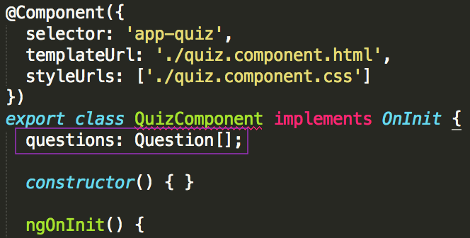

Part 3: Data Set-up
Your template is working and looks pretty, but it’s hardcoded, or, in other words, the data is fixed and can only be edited manually. Add a couple questions and answers to your component, and make the template render your quiz questions dynamically. In Part 3, you’ll do some set-up work for data to use in your template. Part 4 will be to integrate the data with your component’s template (HTML).
Later, you’ll be using an API [Application Programming Interface], to allow your application to interface with a set of questions and answers for your quiz. In order to make that transition go smoothly, you'll set-up your data in the same format that will come from the API.
Copy the following code:
this.questions = [ { "text": "Florence Nightingale became known as \"the Lady With the Lamp\" during which war?", "answers": [ { "correct": false, "text": "American Civil War" }, { "correct": false, "text": "World War I" }, { "correct": true, "text": "Crimean War" }, { "correct": false, "text": "World War II" } ] }, { "text": "In a quarter-mile race, which animal can be expected to win?", "answers": [ { "correct": false, "text": "Lion" }, { "correct": true, "text": "Pronghorn Antelope" }, { "correct": false, "text": "Quarter Horse" }, { "correct": false, "text": "Giraffe" } ] } ];Atom may highlight the
this.questionstext in red and you may see a warning that states "Property 'questions' does not exist on type 'QuizComponent'." when you hover over that text. </br> You can ignore this warning for now, we'll fix it in the next few steps.In Atom, open your src/app/quiz/quiz.component.ts file by double clicking on it in the left side Project Pane. In the
ngOnInit()method, between the opening and closing curly braces, ({}), paste that code in.Check your code against the answer key here: [http://bit.ly/spa-3_1].
Since you’re using TypeScript, you'll need to set data types for the data that you just copied and pasted. This is one file Angular CLI won’t generate for you since it can't read your mind about what your application's data should look like! Here you'll create a model to represent the data for your applications questions and answers
Create a new file in src/app/quiz & name it quiz.model.ts.
In your newly created quiz.model.ts, add the code below. Feel free to manually type or copy/paste.
export class Answer { correct: boolean; text: string; } export class Question { text: string; answers: Answer[]; }What does this code do?
It defines two models, one
Answermodel and oneQuestionmodel. It exports the models so you can import the models into the file where you want to use them.The
Answermodel has 2 properties:correctandtext.correctis of data type boolean (that means it can be set to either true or false).textis of data type string (that means it represents textual data or, a series of characters).The
Questionmodel has two properties:textandanswers.textis of data type string.answersis of data type array (this means it can hold multiple items of any data type, similar to a list like a grocery list or a honey-do list)
Now you'll import these models into the quiz.component.ts file to use them.
In Atom, open the src/app/quiz/quiz.component.ts file & below the
importstatment at the top, type:import {} from './quiz.model';Place your cursor in the middle of the curly braces
{}. And typeA. Atom should give you an autocomplete suggestion ofclass Answer. [Hit tab or enter/return key for it to autocompleteAnswerfor you.]Add a comma after
Answer& repeat the process by typingQ[for Question].
In the quiz.component.ts file, within the
OnInitmethod, type:questions: Question[];
This uses the imported
QuestionModel to set the type forquestions, (the data we set earlier inngOnInit).